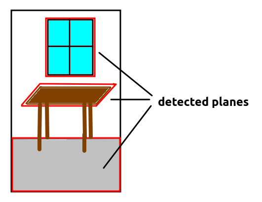
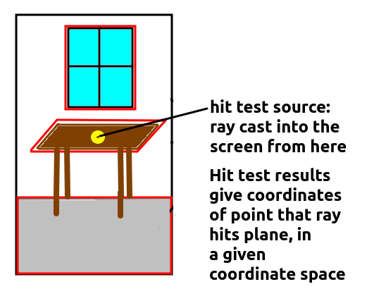

In this topic we will introduce the emerging WebXR standard. XR stands for Extended Reality and is a general term for both VR and AR. WebXR has succeeded an earlier standard, WebVR, which was purely aimed at VR environments such as headsets.
We will also look at one or two general A-Frame concepts we have not had time to look at yet: systems and event handling.
WebXR is a very new API which is still very much in development, and consequently, it is rather difficult to find well-documented examples. Nonetheless there is (rather technical and low level) API documentation available at the W3C which describes the various objects needed to work with WebXR. Mozilla and immersiveweb.dev (maintained by the W3C) also provide some useful and more accessible documentation.
WebXR will allow several advanced markerless AR features, such as:

WebXR is designed to be a generic specification, which can potentially use any underlying AR library. Currently, it is only supported by Chrome, Edge and Samsung Internet (see the Mozilla docs). On Chrome on an Android device, it wraps Google's underlying ARCore library. ARCore is the official Google library for Android markerless augmented reality; as well as having a client-side, on-phone component, it uses Google servers to do part of the surface detection. So if you write a WebXR application, you are using ARCore under the hood.
Furthermore, at the moment, only certain Android devices support ARCore (see here), though nowadays it is quite a large range of devices. There is no official support on iOS, though Mozilla have been developing a WebXR viewer for iOS which wraps ARKit, Apple's equivalent to ARCore.
On the other hand, there is nothing in the WebXR specification that says that you must use ARCore. It would be possible for developers of web browsers to implement WebXR so that another underlying, lower-level API entirely is used if ARCore is not available. Even if it is, one issue with ARCore is that it partly uses Google services - server-side code - to implement the AR, and this code is closed-source; so a complete open-source implementation might be preferred.
As explained earlier, the WebXR specification has gone rapid changes recently though the W3C documentation above will be accurate and the Mozilla docs also appear to be accurate. However, full tutorials are rather hard to find. For that reason, it might be preferred to use a library which already provides WebXR support and luckily, recent versions of A-Frame do.
WebXR (through ARCore) works by building a map of the world containing detected planes (surfaces, such as floors or table tops). Using computer vision, it tracks the scene, detecting planes. Each plane is given coordinates, representing its position within the world. Thus, this map, and the planes within it, can be referenced by a 3D coordinate system. Typically, negative z in this 3D coordinate system will correspond to the direction the camera is facing when the application starts up.
When developing a WebXR application, you need to use various objects which are part of the WebXR API. These include:
viewer space because the ray is positioned relative to the user's current view of the world.local-floor - reference space). So for a hit position, the pose would contain the coordinates where the ray meets the detected plane, and also the angle (orientation) at which the ray intersects the plane.XRHitTestSource.The diagram below illustrates the concept of a hit test source.

We will now go through an absolute basic web application which features user interaction. This code, available on GitHub, is based on the example on GitHub by user stsphanho, which itself is based on the Spinosaurus example developed by Klaus Weidner. It displays a dinosaur model on the plane detected at the centre of the screen, when the user taps the screen.
<!DOCTYPE html>
<html>
<head>
<meta charset="utf-8" />
<title>A-Frame WebXR test</title>
<script type='text/javascript' src='dist/bundle.js'></script>
</head>
<body>
<a-scene webxr='referenceSpaceType: local-floor; requiredFeatures:hit-test,local-floor;' ar-hit-test>
<a-assets timeout="30000">
<!-- Model source: https://sketchfab.com/3d-models/spinosaurus-2135501583704537907645bf723685e7
Model author: https://sketchfab.com/VapTor
Model license: CC Attribution -->
<a-asset-item id="spinosaurus" src="https://cdn.glitch.com/324a5290-5aa7-4efc-92d6-ae0736433b12%2Fspinosaurus.glb" response-type="arraybuffer"></a-asset-item>
</a-assets>
<a-entity id="dino" position="-1 0 -2" scale="0.25 0.25 0.25">
<a-entity position="0 2.15 0" rotation="0 55 0"
gltf-model="#spinosaurus"></a-entity>
</a-entity>
<a-light type="directional"
id="light"
target="dino"
position="-2 4 2">
</a-light>
</a-scene>
</body>
</html>
Note how we add webxr to the <a-scene>. This enables WebXR. Note also how we specify the required features of hit-test (we want hit testing) and local-floor (we want a floor-based coordinate system, as discussed above). ar-hit-test is our custom component, shown below.
You'll note the model is the <a-entity> with an id of dino (a Spinosaurus dinosaur model). Note how this is scaled to a quarter of the normal size (to avoid the dinosaur being too big) and placed at a certain initial position in the world. You'll note that the model does not have
any special AR components attached to it; it's just specified as a model
entity as we normally would in an A-Frame application.
Note also how a light source is added which is shining on the
dinosaur (target="dino").
We create a component named ar-hit-test
and give our component an init() function, containing code to run on startup:
// Credit:
//
// based on https://github.com/stspanho/aframe-hit-test/ but simplified
// this was in turn based on Klaus Weidner's Spinosaurus example: see
// https://xr-spinosaurus.glitch.me/
import 'aframe';
AFRAME.registerComponent('ar-hit-test', {
init: function() {
// Initialise the WebXR objects we need to null
this.resetVariables();
// when session ends, set everything to null
this.el.sceneEl.renderer.xr.addEventListener('sessionend', this.resetVariables.bind(this));
// remaining code will go here...
},
// Initialise variables to null on startup and re-nullify on shutdown
resetVariables: function() {
this.xrHitTestSource = null;
this.viewerSpace = null;
this.floorSpace = null;
}
});
This code initialises three variables, the XRHitTestSource and two XRReferenceSpaces, the viewer space and the floor space (see above), to null when the application starts up. Furthermore, these
variables are reset to null when the XR session ends, as the
variables are no longer needed.
We then handle the XR session starting. When this happens, a sessionstart event will be emitted. In an A-Frame application, this occurs when the user presses the "AR" button on the UI. This switches to AR mode and initialises the XR session. This code would go inside your init():
// Handle the XR session starting...
this.el.sceneEl.renderer.xr.addEventListener('sessionstart', e=> {
First thing we do in the sessionstart event handler is obtain the XRSession object:
let xrSession = this.el.sceneEl.renderer.xr.getSession();We then request the viewer reference space (the space relative to the user's current view of the world). We need this to cast a ray from the centre (origin) of the screen. Having obtained the viewer reference space, we create a hit test source using it. This hit test source will, by default, cast a ray from the origin of the viewer reference space (the centre of the screen) towards negative z (into the screen). Thus, we will test intersections between this ray and any planes visible at the centre of our screen. Note this code is asynchronous and promise-based.
xrSession.requestReferenceSpace('viewer').then( space => {
this.viewerSpace = space;
// Once we have the viewer space, request an XRHitTestSource
// using it (used to generate rays from the centre of the screen)
xrSession.requestHitTestSource({space: this.viewerSpace})
.then(hitTestSource => {
this.xrHitTestSource = hitTestSource;
});
});
Now, still in the sessionstart event handler, we request floor
(local-floor) reference space. Hit test result coordinates will
be obtained in floor space coordinates, which we need to place the dino on
the plane detected at the centre of the screen.
xrSession.requestReferenceSpace('local-floor').then( space => {
this.floorSpace = space;
});
Next thing in the sessionstart event handler is to handle
select events on the xrSession. These will occur
when the user presses the screen and selects a detected plane. In the
select handler, we
obtain hit test results using the hit test source we obtained earlier, i.e.
a ray extending into the screen from the centre of the screen. There's quite
a lot going on here, so please refer to the comments for detail.
xrSession.addEventListener('select', xrInputSourceEvent => {
// Get the current frame
const frame = xrInputSourceEvent.frame;
// Get the hit test results. To get the hit test results, we
// need an XRHitTestSource, which was initialised above
const hitTestResults = frame.getHitTestResults(this.xrHitTestSource);
console.log(`hit test results length: ${hitTestResults.length}`);
// We need the hit test result coordinates relative to a given
// XRReferenceSpace see above)
// The floor space is relative to our mapped world (-z will
// be in front of the camera on startup)
// while the viewer space is relative to our
// current view of it. We want to place the dino in floor
// (world) space.
// Both spaces were initialised above.
// The origin of the ray will be the centre of the screen,
// not the press position. This is because we are using
// viewer space for the XRHitTestSource, and the ray, by default, is cast
// from the centre of our chosen space.
// Make sure there are hit test results and the local-floor space has been
// initialised
if(hitTestResults.length > 0 && this.floorSpace) {
// get the pose of the hit (position and orientation
// relative to a given space). We want the floor space here,
// not the viewer space, as we want to place the dino at
// an absolute position within the mapped world, not
// relative to the current view.
const pose = hitTestResults[0].getPose(this.floorSpace);
// the pose contains orientation, however here, we are
// only interested in its position
const pos = pose.transform.position;
// place dino at this position
document.getElementById('dino').setAttribute('position' , {
x: pos.x,
y: pos.y,
z: pos.z
});
// Shine light on dino at its new position
document.getElementById('light').setAttribute('position',{
x: pos.x-2,
y: pos.y+4,
z: pos.z+2
});
}
});
Now finally, the sessionstart event handler is closed.
});
To summarise:
viewer reference space (relative to the current view) and the local-floor reference space (relative to the map of our world that ARCore has built). From the viewer reference space, we initialise an XRHitTestSource.select event handler generated from the XRSession. This will occur when the user taps the screen. In here, we get the XRHitTestResults using the XRHitTestSource we set up. Note that the ray will be cast from the origin of the XRReferenceSpace used to setup the XRHitTestSource; as we used viewer space, the ray will be cast from the centre of the screen - not the position of the press. If we have results, we take the first result (it's possible the ray from the centre of the screen might intersect more than one plane). We obtain its pose relative to floor (world) space and from the pose, obtain the position in floor (world) space coordinates. We then set the dino's position to these coordinates and change the light's position to ensure it keeps shining on the dino. So, as a result, the dino will appear on the plane found at the centre of the screen.A common pattern in AR applications is to show a graphical indicator - a reticle - to indicate the position that a ray beginning at the centre of the screen hits a detected plane. The reticle will, as a result, appear at the centre of the screen overlaid on a detected plane. A user can then press the reticle to create a model at that position. The reticle will thus enhance the user experience by showing them exactly where the model will be placed. The example below does precisely this; once again it's available on GitHub, and is again based on the example on GitHub by user stsphanho, which is based on the Spinosaurus example developed by Klaus Weidner.
Here is the HTML:
<!DOCTYPE html>
<html>
<head>
<meta charset="utf-8" />
<title>A-Frame WebXR test</title>
<script type='text/javascript' src='dist/bundle.js'></script>
</head>
<body>
<a-scene webxr='referenceSpaceType: local-floor; requiredFeatures:hit-test,local-floor;'>
<a-assets timeout="30000">
<!-- Model source: https://sketchfab.com/3d-models/spinosaurus-2135501583704537907645bf723685e7
Model author: https://sketchfab.com/VapTor
Model license: CC Attribution -->
<a-asset-item id="spinosaurus" src="https://cdn.glitch.com/324a5290-5aa7-4efc-92d6-ae0736433b12%2Fspinosaurus.glb" response-type="arraybuffer"></a-asset-item>
<a-asset-item id="reticle"
src="reticle.gltf"
response-type="arraybuffer"></a-asset-item>
</a-assets>
<a-entity id="dino" position="-1 0 -2" scale="0.1 0.1 0.1">
<a-entity position="0 2.15 0" rotation="0 55 0"
gltf-model="#spinosaurus"></a-entity>
</a-entity>
<a-light type="directional"
id="light"
target="dino"
position="-2 4 2">
</a-light>
<a-entity ar-hit-test-reticle gltf-model="#reticle"></a-entity>
</a-scene>
</body>
</html>
and the JavaScript:
// Credit:
//
// based on https://github.com/stspanho/aframe-hit-test/ but simplified
// this was in turn based on Klaus Weidner's Spinosaurus example: see
// https://xr-spinosaurus.glitch.me/
import 'aframe';
AFRAME.registerComponent('ar-hit-test-reticle', {
init: function() {
this.resetVariables();
// when session ends set everything to null
this.el.sceneEl.renderer.xr.addEventListener('sessionend', this.resetVariables.bind(this));
// Handle the stession starting...
this.el.sceneEl.renderer.xr.addEventListener('sessionstart', e=> {
// Get the XRSession
this.xrSession = this.el.sceneEl.renderer.xr.getSession();
// Obtain the viewer reference space and hit test source,
// and the local-floor space. This code is not shown, but will be
// more or less the same as the equivalent code in the first
// example, above.
// When a user selects something (a detected plane) the select
// event will fire
this.xrSession.addEventListener('select', xrInputSourceEvent => {
// Set 'pos' to the RETICLE position (this component is
// attached to the reticle so this.el will represent the
// reticle). The reticle position is determined in tick(),
// below
const pos = this.el.getAttribute('position');
// Set dino to the RETICLE position
document.getElementById('dino').setAttribute('position' , {
x: pos.x,
y: pos.y,
z: pos.z
});
// Shine light on dino (same code as before, not shown...)
});
})
},
// tick() function
// Remember this runs every time the screen redraws itself.
tick: function() {
// If we are not in 'AR' mode, return.
if(!this.el.sceneEl.is('ar-mode')) return;
// If the session, the frame, the floor space and the hit test source
// have all been setup...
if(this.xrSession && this.el.sceneEl.frame && this.floorSpace && this.xrHitTestSource) {
// Get the current frame
const frame = this.el.sceneEl.frame;
// Get hit test results from a ray projected from the centre of the screen
const hitTestResults = frame.getHitTestResults(this.xrHitTestSource);
// If we have any...
if(hitTestResults.length > 0) {
// Get pose and position of the hit, as the first example
const pose = hitTestResults[0].getPose(this.floorSpace);
const position = {
x: pose.transform.position.x,
y: pose.transform.position.y,
z: pose.transform.position.z
};
// Set the reticle's position to the hit position
// We use this in the "select" event handler, above
this.el.setAttribute('position', position);
}
}
},
resetVariables: function() {
this.xrHitTestSource = null;
this.viewerSpace = null;
this.floorSpace = null;
this.xrSession = null;
}
});
This example is a little more complex than the first example, but not much.
The key points to note are:
ar-hit-test-reticle component is now attached to the reticle entity. Thus, the reticle can be accessed within the component using this.el.tick() method, which runs every time the screen needs to redraw itself, as we have seen already. In the tick() method, we obtain the hit test results from a ray starting at the centre of the screen, in order to draw the reticle superimposed on a plane detected at the centre of the screen. If there are results, we take the first result, as before, and then calculate the pose and the position. We update the reticle's position to the hit position; thus, the reticle will appear projected onto a plane at the centre of the screen.As said above, WebXR tutorials are rather hard to find but here are three example applications, two of which have already been referenced above.
We will now consider one or two further general A-Frame topics (not specific to WebXR) which we have not had the chance to look at yet.
A-Frame adopts what is called an entity-component-system architecture. We have already seen the roles of entities and components. What are systems?
A system is an object which contains the detailed logic of a component. The idea is to keep the component itself lightweight, so that it mostly just contains lifecycle methods - and then add the detailed logic to the system. If you register a system with AFRAME.registerSystem() and that system has the same name as a component, it will be accessible from the component via this.system. For example:
AFRAME.registerComponent("mycomponent", {
init: function() {
// the system can be accessed from the component as this.system
// e.g. this.system.doSomething() will call the doSomething() method
// (function) of the system
}
});
// System contains methods (functions) which do the detailed logic
AFRAME.registerSystem("mycomponent", {
doSomething: function() {
},
doSomethingElse: function() {
}
});
Our components so far are not complex enough to need systems, but as you build more complex components you'll find your code becomes more modular if you separate out the detailed logic into a system.
See here for more detail.
Real examples of systems you have come across include arjs (the system which initialises AR.js, see week 8) and webxr which we looked at this week, which initialises WebXR.
Another feature of A-Frame is the ability to generate custom events which can then be handled elsewhere in our code. For example, one component can generate an event, and another component can handle it. The advantage of this approach is it allows for development of reusable components, which do not depend on other components: we can simply generate an event from a given component and then, if another component needs to handle that event, it can implement an event handler for it, rather than explicitly containing a reference to the first component. We want to make each component independent and reusable, and components containing dependencies on other components makes this more difficult. Event handling, by contrast, reduces the need of these kinds of dependencies.
To generate an event, we emit it from a given entity:
this.el.emit('data-loaded', {
pois: poisDownloadedFromWeb
});
This example is emitting an event named data-loaded. The second
parameter to emit() represents the actual data we want to emit,
which here is an object containing a pois property. This property contains points of interest downloaded from the web.
To handle an event, we use the standard DOM addEventListener()
method. For example, in another component attached to the same entity, we
could do:
this.el.addEventListener('data-loaded', e => {
this.drawPOIs(e.detail.pois);
}
Note how (as usual) the event handler takes an event object as a parameter,
and this contains a detail property which contains the original
data emitted with the event, i.e. an object with a pois property
here.
Note also that if you emit an event, you can handle the event not only on
the entity which originally emitted the event, but any of that entity's
parents (such as, for example, the scene). This is called event bubbling; the event "bubbles up" from the entity which emitted it to that entity's parent entities. So if you need to handle the event on a component not attached to the entity which emitted it, you can handle it on the scene entity this.el.sceneEl. For example:
this.el.sceneEl.addEventListener('data-loaded', e => {
this.drawPOIs(e.detail.pois);
}
You will need an ARCore-supporting Android phone for this exercise.. Also, you will find debugging easier by remote-debugging your Android device from desktop Chrome. See here for more information.
rotation component of the pose of the hit location to rotate it correctly. The rotation is expressed as a mathematical construct known as a quaternion. Quaternions are a complex concept but are somewhat simpler in the context of 3D graphics: essentially they represent the amount of rotation around some arbitrary axis, not necessarily the x, y or z axes. What do we mean by an arbitrary axis? Imagine an axis passing through the origin and then passing through x=2, y=3, z=4. The x, y and z components of the axis would be x=2, y=3, z=4. A quaternion is a 4-member data structure containing four variables:
w, the amount of rotation around a given axis;x, representing the x component of the axis;y, representing the y component of the axis;z, representing the z component of the axis.(x1,y1,z1), then the quaternion is made up of
:
w = cos (θ/2)x = sin (θ/2) * x1y = sin (θ/2) * y1z = sin (θ/2) * z1
The orientation of the hit point is expressed as a quaternion and can be accessed via pose.transform.orientation. To apply this quaternion to the reticle and the model (so that the model appears to be standing on a surface, even if the surface is vertical), we can use:
// sourced originally from https://ada.is/basketball-demo/ar-components.js // Get the Three.js object3D of the A-Frame entity. This has a 'quaternion' // property, and we can copy the pose orientation into this quaternion to set // the entity (the reticle)'s orientation. this.el.object3D.quaternion.copy(pose.transform.orientation); // Do the same for the dino (up to you to do..)
enter-vr and exit-vr event handlers, when the user presses the 'AR' button and when they leave AR mode. These event handlers can be used to hide, or show, VR content - such as a plane - which you do not want to appear in AR mode. Create a ground plane in your application, hide it in the enter-vr event handler and show it again in the exit-vr event handler. For example we could use code such as:
this.el.sceneEl.addEventListener('enter-vr', e => {
// hide any entities we don't want to show - set the 'visible' attribute to false
});
this.el.sceneEl.addEventListener('exit-vr', e => {
// show any entities previously hidden - set the 'visible' attribute to true
});